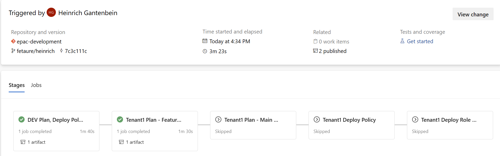
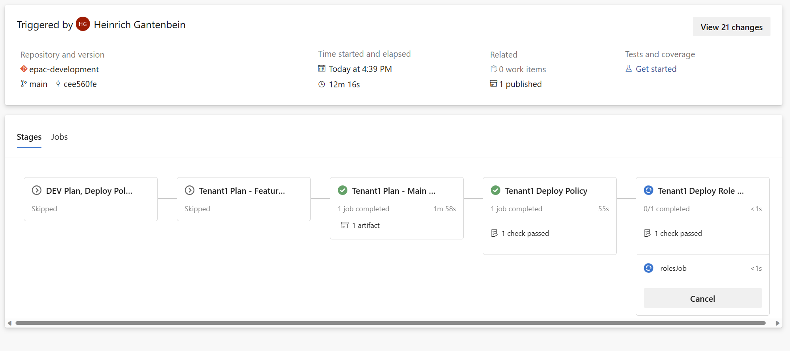
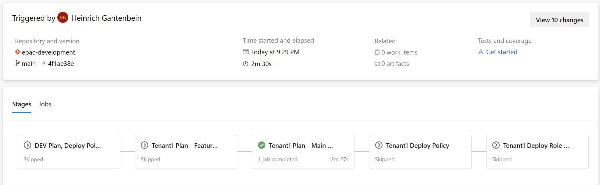

CI/CD Pipeline
This repository contains starter pipeline definitions for Azure DevOps. The authors are interested in supporting other deployment pipelines. If you have developed pipelines for other technologies, such as GitHub, Jenkins, etc., please contribute them to the project as additional starter kits
Simplified GitHub Flow for Policy as Code
The diagram below shows the use of GitHub Flow in Policy as Code. Builds are triggered for Commits, optionally for Pull Requests and for successful main branch merges.
Service connections for DevOps CI/CD
Create Service Principals for the pipeline execution and setup your DevOps environment with the necessary service connections. You will need SPNs with specific roles as shown below.
- Single tenant pipeline service connections.
- Multi tenant pipeline service connections.
When creating a Service Connection in Azure DevOps you can set up the service connections on a Subscription or a Management Group scope level. If you are using subscriptions to simulate a hierarchy during EPAC development, configure the service connection(s) scope level as Subscription. When creating a Service Connections for management groups (any EPAC environments) Deployment and EPAC Role Assignment the service connection scope level is Management Group.
| Subscription scope level | Management Group scope level |
|---|---|
Single Tenant Pipeline
Single Tenant Stages
| Stage | Purpose | Trigger | Scripts |
|---|---|---|---|
| devStage | Feature branch DEV environment build, deploy and test | CI, Manual | Build-DeploymentPlans.ps1 Deploy-PolicyPlan.ps1 Deploy-RolesPlan.ps1 |
| tenantPlanFeatureStage | Feature branch based plan for prod deployment | CI, Manual | Build-DeploymentPlans.ps1 |
| tenantPlanMainStage | Main branch based plan for prod deployment | PR Merged, Manual | Build-DeploymentPlans.ps1 |
| tenantDeployStage | Deploy Policies defined by Main branch based plan | Prod stage approved | Deploy-PolicyPlan.ps1 |
| tenantRolesStage | Assign roles defined by Main branch based plan | Role stage approved | Deploy-RolesPlan.ps1 |
Single Tenant Service Connections and Roles
Create Service Principals and associated service connections in Azure DevOps or the equivalent in your CI/CD tool. The SPNs require the following roles to adhere to the least privilege principle. If you have a single tenant, remove the last column and rows with connections ending in "-2".
| Connection | Stages | MG: epac-dev-mg | MG: Tenant Root |
|---|---|---|---|
| sc-pac-dev | devStage | Owner Graph Permissions |
|
| sc-pac-plan | tenantPlanFeatureStage tenantPlanMainStage |
EPAC Policy Reader Graph Permissions |
|
| sc-pac-prod | tenantDeployStage | Policy Contributor | |
| sc-pac-roles | tenantRolesStage-1 | User Access Administrator |
Multi Tenant Pipeline
Multi Tenant Stages
| Stage | Purpose | Trigger | Scripts |
|---|---|---|---|
| devStage | Feature branch EPAC DEV environment build, deploy and test | CI, Manual | Build-DeploymentPlans.ps1 Deploy-PolicyPlan.ps1 Deploy-RolesPlan.ps1 |
| tenantPlanFeatureStage-1 | Feature branch based plan for prod deployment (tenant 1) | CI, Manual | Build-DeploymentPlans.ps1 |
| tenantPlanMainStage-1 | Main branch based plan for prod deployment (tenant 1) | PR Merged, Manual | Build-DeploymentPlans.ps1 |
| tenantDeployStage-1 | Deploy Policies defined by Main branch based plan (tenant 1) | Prod stage approved | Deploy-PolicyPlan.ps1 |
| tenantRolesStage-1 | Assign roles defined by Main branch based plan (tenant 1) | Role stage approved | Deploy-RolesPlan.ps1 |
| tenantPlanFeatureStage-2 | Feature branch based plan for prod deployment (tenant 2) | CI, Manual | Build-DeploymentPlans.ps1 |
| tenantPlanMainStage-2 | Main branch based plan for prod deployment (tenant 2) | PR Merged, Manual | Build-DeploymentPlans.ps1 |
| tenantDeployStage-2 | Deploy Policies defined by Main branch based plan (tenant 2) | Prod stage approved | Deploy-PolicyPlan.ps1 |
| tenantRolesStage-2 | Assign roles defined by Main branch based plan (tenant 2) | Role stage approved | Deploy-RolesPlan.ps1 |
| completedFeature | Empty stage to complete feature branch | None | None |
Multi Tenant Service Connections and Roles
Create Service Principals and associated service connections in Azure DevOps or the equivalent in your CI/CD tool. The SPNs require the following roles to adhere to the least privilege principle. If you have a single tenant, remove the last column and rows with connections ending in "-2".
| Connection | Stages | MG: epac-dev-mg | MG: Tenant 1 Root | MG: Tenant 2 Root |
|---|---|---|---|---|
| sc-pac-dev | devStage | Owner Graph Permissions |
||
| sc-pac-plan-1 | tenantPlanFeatureStage-1 tenantPlanMainStage-1 |
EPAC Policy Reader Graph Permissions |
||
| sc-pac-plan-2 | tenantPlanFeatureStage-2 tenantPlanMainStage-2 |
EPAC Policy Reader Graph Permissions |
||
| sc-pac-prod-1 | tenantDeployStage-1 | Policy Contributor | ||
| sc-pac-prod-2 | tenantDeployStage-2 | Policy Contributor | ||
| sc-pac-roles-1 | tenantRolesStage-1 | User Access Administrator | ||
| sc-pac-roles-2 | tenantRolesStage-2 | User Access Administrator | ||
| none | completedPlanFeatureStage |
Role Assignments for CI/CD SPNs
Breaking change: For the planning stages, the SPN used must use a simpler reader role definition and have MS Graph permissions.
MS Graph permissions
EPAC uses Get-AzRoleAssignment to retrieve role assignments. Microsoft has recently changed the internals from using the deprecated AAD API to use MS Graph. MS Graph queries are more complex and improve security. The cmdlet may call the following Microsoft Graph API according to input parameters:
- GET /users/{id}
- GET /servicePrincipals/{id}
- GET /groups/{id}
- GET /directoryObjects/{id}
- POST /directoryObjects/getByIds
You must assign these MS Graph Application permissions corresponding to the above APIs:-
- User.Read.All
- ServicePrincipalEndpoint.Read.All
- Group.Read.All
- Directory.Read.All
After you configure the Permissions (Add a permission), you must Grant admin consent for .... The result in Azure AD portal looks like this:
Read the following Microsoft instructions to learn more about MS Graph Application Permissions
Custom EPAC Resource Policy Reader Role
EPAC uses a set of Service Principals to execute the Plan phase which do not require as many rights as those that deploy policy assets into Azure. In version 6, we introduced a breaking change that leveraged MS Graph API to retrieve information about the current Azure configuration. This both improves performance, and moves us to the replacement technology for the older Azure Graph API. The addition of Microsoft.Graph/Operations/read is the change which enables this functionality.
The list of roles, and their descriptions is available online here.
{
"properties": {
"roleName": "EPAC Resource Policy Reader",
"description": "Provides read access to all Policy resources for the purpose of planning the EPAC deployments.",
"assignableScopes": [
"/"
],
"permissions": [
{
"actions": [
"Microsoft.Authorization/policySetDefinitions/read",
"Microsoft.Authorization/policyAssignments/read",
"Microsoft.Authorization/policyDefinitions/read",
"Microsoft.Authorization/policyExemptions/read",
"Microsoft.PolicyInsights/*",
"Microsoft.Management/register/action"
],
"notActions": [],
"dataActions": [],
"notDataActions": []
}
]
}
}
Operations script New-AzPolicyReaderRole.ps1 creates the role assignment with the above settings.
Azure DevOps Pipeline
Service Connections
Service connections give the pipeline the proper permissions to deploy at desired Azure scopes. Refer to the following documentation: https://docs.microsoft.com/en-us/azure/devops/pipelines/library/service-endpoints?view=azure-devops&tabs=yaml.
Deployment Environments
Create distinct ADO environment to configure approval gates. Refer to the following documentation: https://docs.microsoft.com/en-us/azure/devops/pipelines/process/environments?view=azure-devops
Deployment Scripts
While this script intended to be used, they can be run manually to create a semi-automated EPAC solution. This is useful:
- CI/CD environment is not yet available
- Debugging the scripts from Visual Studio Code (or other IDE)

Common Script Parameters
| Parameter | Required | Explanation |
|---|---|---|
pacEnvironmentSelector |
Optional | Selects the EPAC environment for this plan. If omitted, interactively prompts for the value. |
definitionsRootFolder |
Optional | Definitions folder path. Defaults to environment variable $env:PAC_DEFINITIONS_FOLDER or ./Definitions. It must contain file global-settings.jsonc. |
interactive |
Optional | Defaults to $false. |
Build-DeploymentPlans.ps1
Analyzes changes in Policy definition, Policy Set definition, and Policy Assignment files. It calculates a plan to apply deltas. The deployment scripts are declarative and idempotent: this means, that regardless how many times they are run, they always push all changes that were implemented in the JSON files to the Azure environment, i.e. if a JSON file is newly created/updated/deleted, the pipeline will create/update/delete the Policy and/or Policy Set and/or Policy Assignments definition in Azure. If there are no changes, the pipeline can be run any number of times, as it won't make any changes to Azure.
In addition to the common parameters, these parameters are defined:
| Parameter | Required | Explanation |
|---|---|---|
outputFolder |
Optional | Output folder path for plan files. Defaults to environment variable $env:PAC_OUTPUT_FOLDER or ./Output. |
devOpsType |
Optional | If set, outputs variables consumable by conditions in a DevOps pipeline. Default: not set. |
Deploy-PolicyPlan.ps1
Deploys Policies, Policy Sets, Policy Assignments, and Policy Exemptions at their desired scope based on the plan.
| Parameter | Required | Explanation |
|---|---|---|
inputFolder |
Optional | Input folder path for plan files. Defaults to environment variable $env:PAC_INPUT_FOLDER, $env:PAC_OUTPUT_FOLDER or ./Output. |
Deploy-RolesPlan.ps1
Creates the role assignments for the Managed Identities required for DeployIfNotExists and Modify Policies.
| Parameter | Required | Explanation |
|---|---|---|
inputFolder |
Optional | Input folder path for plan files. Defaults to environment variable $env:PAC_INPUT_FOLDER, $env:PAC_OUTPUT_FOLDER or ./Output. |
Consuming Excel Files
Exemptions and assignments can use JSON, CSV and Excel (.xlsx) files. Support for Excel files uses a third-party PowerShell module from the PowerShell Gallery. However, the StarterKit pipeline disables the use of .xslx files module (Convert-XlsToCSV.ps1) as this utilizes third party software, which may or may not be permissable in the deployed environment due to supply chain risk mitigation rules. This does not imply any such vulnerabilities exist, and the project can be reviewed for appropriateness for your environment at ImportExcel on Github. You may enable it at your own risk by uncommenting the sections in each planning stage. The pipeline further mitigates the risk by executing this step without Azure credentials.
- task: PowerShell@2
displayName: Convert Excel (.xlsx) to CSV
inputs:
pwsh: true
filePath: "Scripts/Deploy/Convert-XlsToCsv.ps1"
Pipeline Execution
In Azure Devops pipelines the following happens. Your CI/CD tools will display progress differently.
Commit to a feature branch or a manual pipeline run
- Stage devStage to deploy Policies, Policy Sets and Policy Assignments to the PAC DEV environment.
- Calculates the plan for PROD environment deployment based on the Feature branch.
- This plan is never executed. Instead the logs and if desired the artifact generated are used by the developer to verify the definition files and to determine if the code is ready for a Pull Request.
- The PR approver(s) will use the same input plus the source code changes to decide the PR approval or rejection.

Detail view:
Pull Request is approved and branch merged into main
- Calculates the plan for PROD environment deployment based on the merged Main branch.
- The pipeline stops for PROD gate(s) approval at this time.
- The logs and if desired the artifacts generated are used by the PROD gate(s) approver(s) to decide on the PROD stage approval(s) or rejection(s).


- After the approval deployments to PROD will begin.
- Optional a second approval before role assignments is required.
- 
- After the ntire run the overview page looks like this:

No changes
- Deployment steps and stages are skipped. Skipped stages do not need approvals.
- 
Reading List
- Setup DevOps Environment .
- Create a source repository and import the source code from this repository.
- Select the desired state strategy
- Define your deployment environment in
global-settings.jsonc. - Build your CI/CD pipeline using a starter kit.
- Optional: generate a starting point for the
Definitionsfolders: - Extract existing Policy resources from an environment.
- Import Policies from the Cloud Adoption Framework.
- Add custom Policies.
- Add custom Policy Sets.
- Create Policy Assignments.
- Import Policies from the Cloud Adoption Framework.
- Manage Policy Exemptions.
- Document your deployments.
- Execute operational tasks.